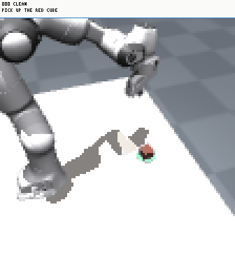
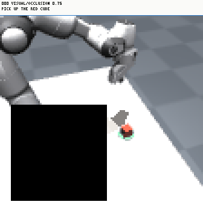
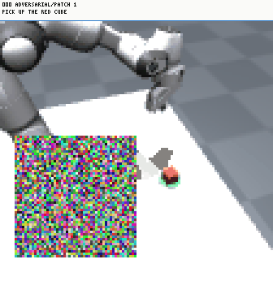

xevals evaluation · showcase
Every episode, grouped by the condition it ran under.
Clips carry the step, the condition and the instruction as the model received it. Below each set, one mark per episode the cell ran, in seed order.


